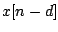
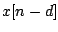
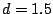
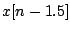
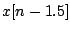
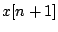
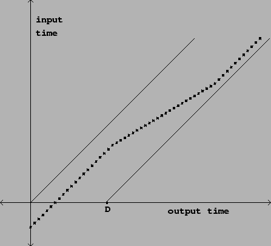
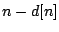
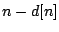

Like any audio synthesis or processing technique, delay networks become much
more powerful and interesting if their characteristics can be made to change
over time. The gain parameters (such as  in the recirculating comb filter)
may be controlled by envelope generators, varying them while avoiding clicks or
other artifacts. The delay times (such as
in the recirculating comb filter)
may be controlled by envelope generators, varying them while avoiding clicks or
other artifacts. The delay times (such as  before) are not so easy to vary
smoothly for two reasons.
before) are not so easy to vary
smoothly for two reasons.
First, we have only defined time shifts for integer values of  , since for
fractional values of
, since for
fractional values of  an expression such as  is not determined if
an expression such as  is not determined if
 is only defined for integer values of
is only defined for integer values of  . To make fractional delays
we will have to introduce some suitable interpolation scheme. And if we
wish to vary
. To make fractional delays
we will have to introduce some suitable interpolation scheme. And if we
wish to vary  smoothly over time, it will not give good results simply
to hop from one integer to the next.
smoothly over time, it will not give good results simply
to hop from one integer to the next.
Second, even once we have achieved perfectly smoothly changing delay times, the artifacts caused by varying delay time become noticeable even at very small relative rates of change; while in most cases you may ramp an amplitude control between any two values over 30 milliseconds without trouble, changing a delay by only one sample out of every hundred makes a very noticeable shift in pitch--indeed, one frequently will vary a delay deliberately in order to hear the artifacts, only incidentally passing from one specific delay time value to another one.
The first matter (fractional delays) can be dealt with using an
interpolation scheme, in exactly the same way as for wavetable lookup
(Section 2.5). For example, suppose we want
a delay of  samples. For each  we must estimate a value for
.
We could do this using standard four-point interpolation, putting a cubic
polynomial through the four ``known" points (0, x[n]), (1, x[n-1]), (2, x[n-2]),
(3, x[n-3]), and then evaluating the polynomial at the point 1.5. Doing
this repeatedly for each value of
we must estimate a value for
.
We could do this using standard four-point interpolation, putting a cubic
polynomial through the four ``known" points (0, x[n]), (1, x[n-1]), (2, x[n-2]),
(3, x[n-3]), and then evaluating the polynomial at the point 1.5. Doing
this repeatedly for each value of  gives the delayed signal.
gives the delayed signal.
This four-point interpolation scheme can be used for any delay of at least one sample. Delays of less than one sample can't be calculated this way because we need two input points at least as recent as the desired delay. They were available in the above example, but for a delay time of 0.5 samples, for instance, we would need the value of , which is in the future.
The accuracy of the estimate could be further improved by using higher-order interpolation schemes. However, there is a trade-off between quality and computational efficiency. Furthermore, if we move to higher-order interpolation schemes, the minimum possible delay time will increase, causing trouble in some situations.
The second matter to consider is the artifacts--whether wanted or unwanted--that arise from changing delay lines. In general, a discontinuous change in delay time will give rise to a discontinuous change in the output signal, since it is in effect interrupted at one point and made to jump to another. If the input is a sinusoid, the result is a discontinuous phase change.
If it is desired to change the delay line occasionally between fixed delay times (for instance, at the beginnings of musical notes), then we can use the techniques for managing sporadic discontinuities that were introduced in Section 4.3. In effect these techniques all work by muting the output in one way or another. On the other hand, if it is desired that the delay time change continuously--while we are listening to the output--then we must take into account the artifacts that result from the changes.
|  |
Figure 7.17 shows the relationship between input and output time in a
variable delay line. The delay line is assumed to have a fixed maximum length
. At each sample of output (corresponding to a point on the horizontal
axis), we output one (possibly interpolated) sample of the delay line's input.
The vertical axis shows which sample (integer or fractional) to use from the
input signal. Letting  denote the output sample number, the vertical axis
shows the quantity , where
denote the output sample number, the vertical axis
shows the quantity , where  is the (time-varying) delay in
samples. If we denote the input sample location by:
is the (time-varying) delay in
samples. If we denote the input sample location by:
There remains one difference between delay lines and wavetables:
the material in the delay line is constantly being refreshed. Not only
can we not read into the future, but, if the
the delay line is samples in length, we can't read further than samples
into the past either:
Returning to Section 2.2, we can use the Momentary
Transposition Formulas for wavetables to calculate the transposition  of
the output. This gives the Momentary Transposition Formula for delay lines:
of
the output. This gives the Momentary Transposition Formula for delay lines:
This is called the Doppler effect, and it occurs in nature as well. The air that sound travels through can sometimes be thought of as a delay line. Changing the length of the delay line corresponds to moving the listener toward or away from a stationary sound source; the Doppler effect from the changing path length works precisely the same in the delay line as it would be in the physical air.
Returning to Figure 7.17, we can predict that there is no pitch shift at the beginning, but then when the slope of the path decreases the pitch will drop for an interval of time before going back to the original pitch (when the slope returns to one). The delay time can be manipulated to give any desired transposition, but the greater the transposition, the less long we can maintain it before we run off the bottom or the top of the diagonal region.